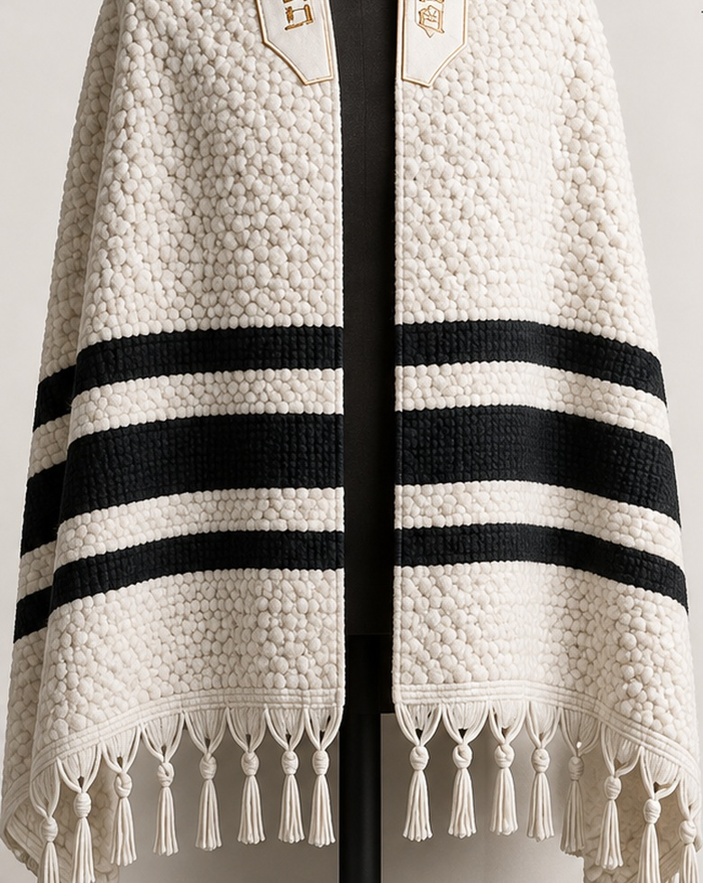
Design 01
The Heritage
Heavy handwoven wool
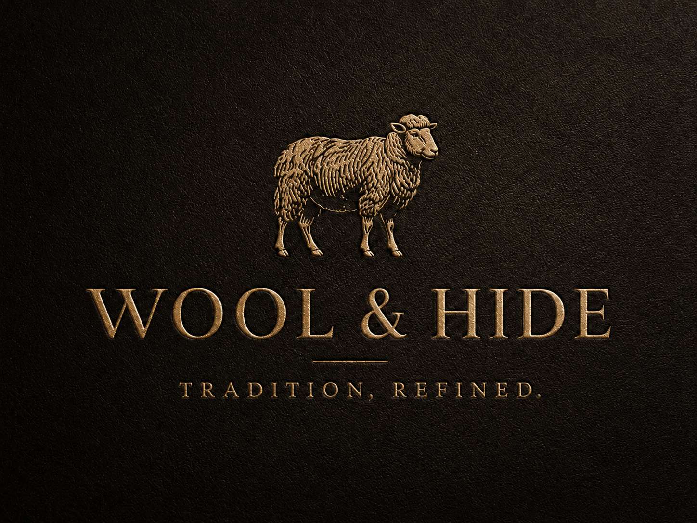
Same tradition. A different experience. Traditional white-and-black tallisim explored through distinctive 100% wool textures, woven patterns, and weights. Click any design to see the full concept and weave detail.

Heavy handwoven wool
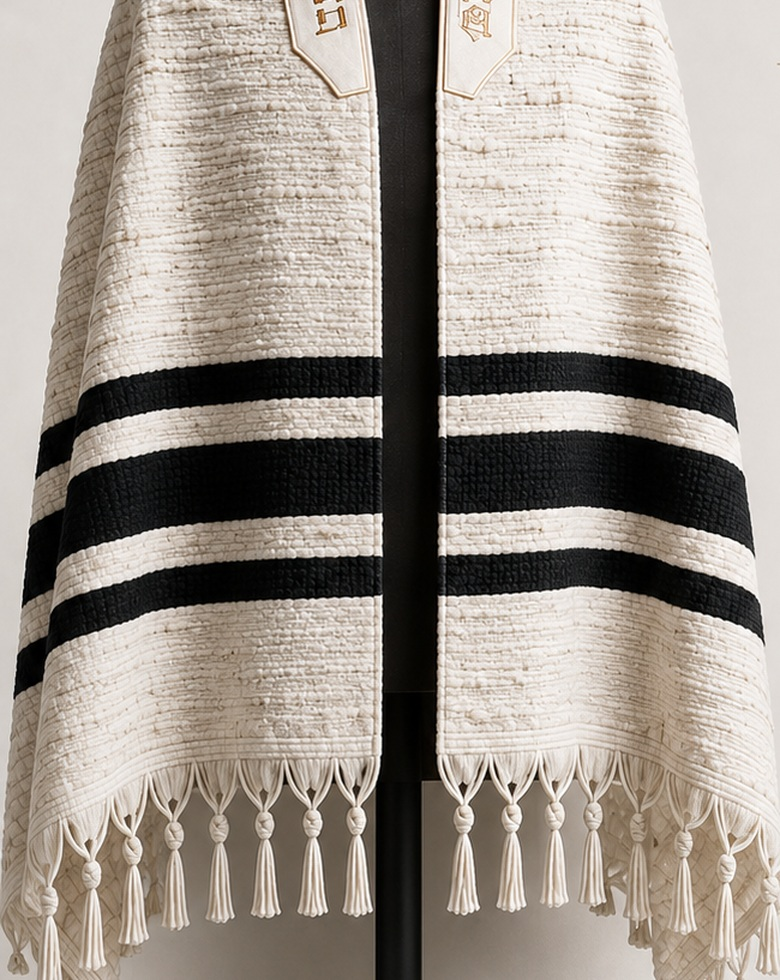
Natural slub wool
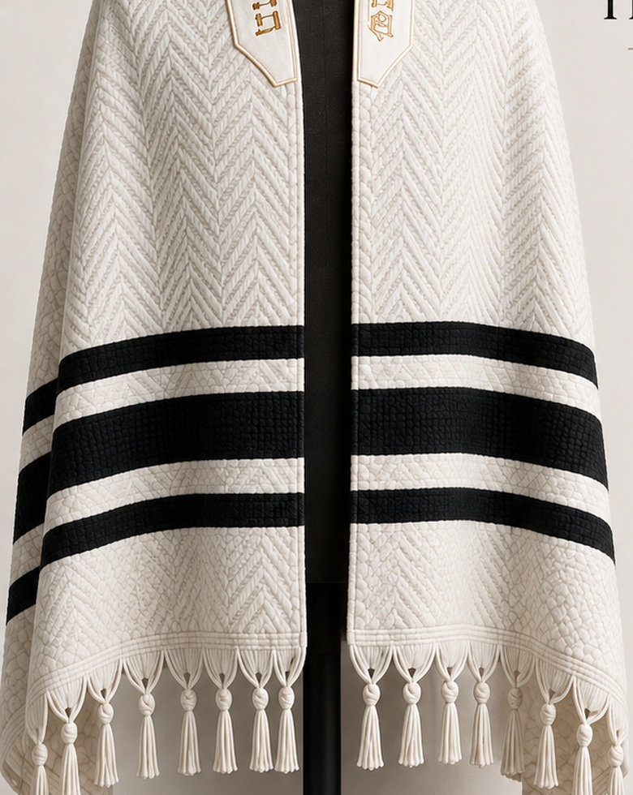
White-on-white herringbone
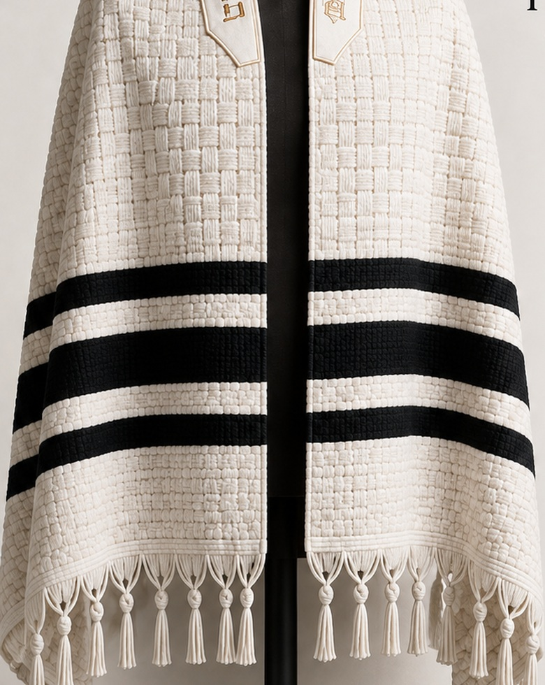
Dimensional basket weave
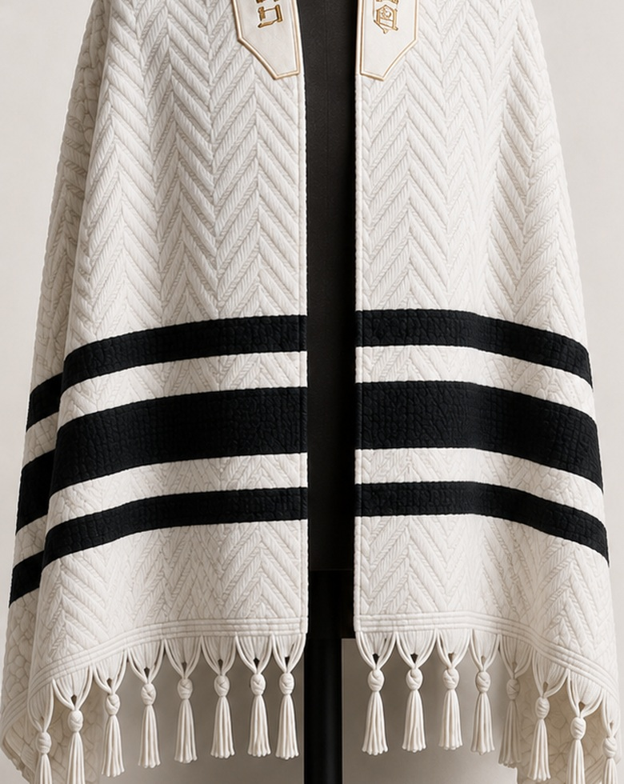
Raised chevron wool
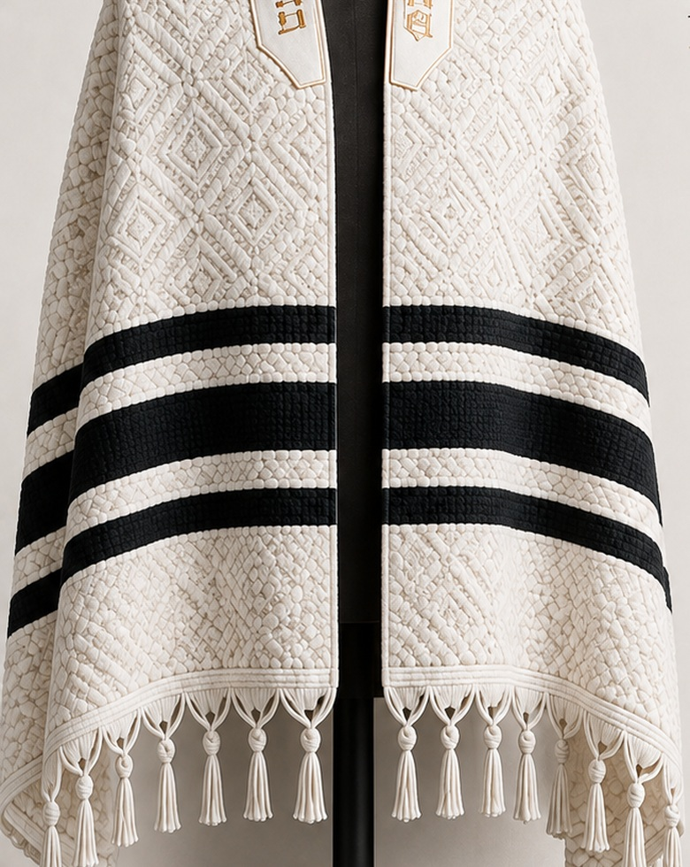
Raised diamond pattern
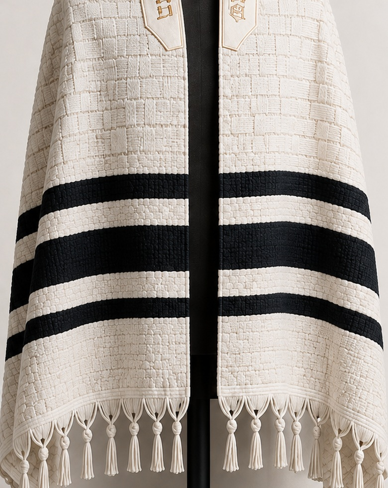
Architectural block weave
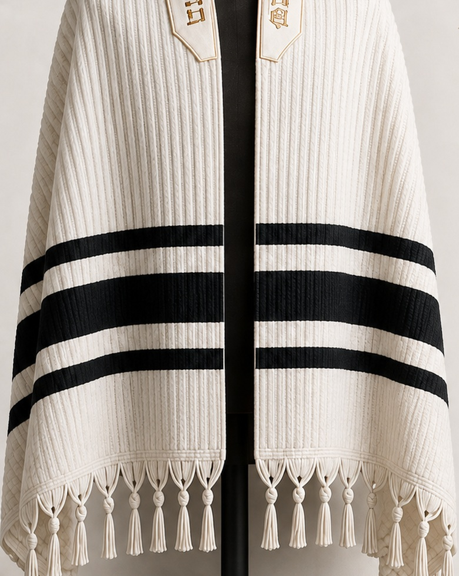
Structured ribbed wool
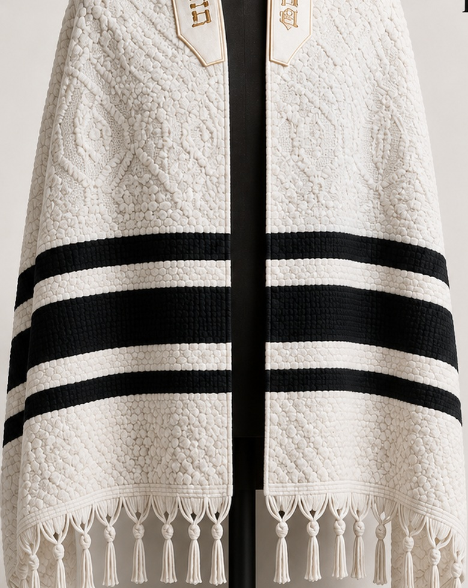
Traditional woven motif
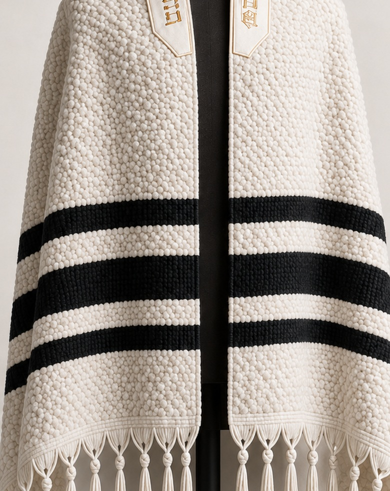
Extra-heavy wool